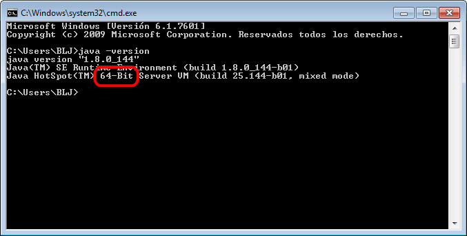
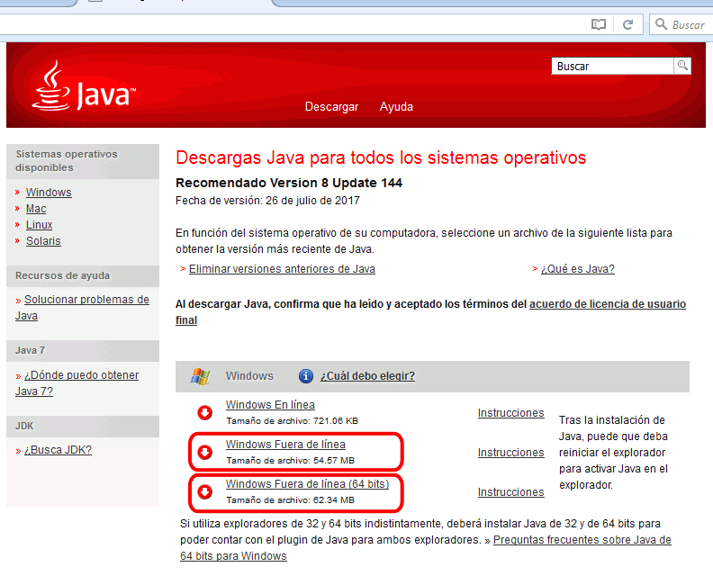

En esta página se explica cómo conseguir e instalar Eclipse for PHP developers (Eclipse PHP) en Windows:
Eclipse PHP es un programa Java por lo que se se necesita tener instalado Java Runtime Environment. Tanto Eclipse como Java están disponibles en versiones de 32 bits y de 64 bits, pero se deben instalar versiones iguales (ambas de 32 bits o ambas de 64 bits).
Para comprobar si ya se tiene Java Runtime Environment instalado, se puede abrir una ventana de Símbolo de sistema (o cmd) y ejecutar el comando java -version.

Si se necesita instalar Java Runtime, se puede descargar el instalador de página de Descarga de Java Runtime Environment
En este curso se recomienda descargar el instalador "fuera de línea" que se ofrece en la página de descarga en sus dos versiones, 32 y 64 bits:
Si se está utilizando Windows de 64 bits, se recomienda instalar la versión de 64 bits de Java Runtime Envirnment 8 (aunque también se podría instalar la de 32 bits). Pero si se está utilizando Windows de 32 bits, se necesita instalar la versión de 32 bits.

En cdlibre.org hay una sección dedicada bibliotecas de sistema desde la que se puede descargar la última versión de Java Runtime Environment para Windows (64 bits).
En este curso se aconseja utilizar el editor Eclipse for PHP Developers (Eclipse PHP).
La última versión disponible actualmente (octubre de 2017) en la web de Eclipse es la versión Eclipse for PHP developers Oxygen.1, publicada el 3 de octubre de 2017 y que incluye la plataforma Eclipse 4.7.1 y el plug-in Eclipse PDT 5.1.
Estos son los laces de descarga de Eclipse PHP Oxygen:
Si se está utilizando Windows de 64 bits, se recomienda instalar la versión de 64 bits de Eclipse PHP (aunque también se podría instalar la de 32 bits). Pero si se está utilizando Windows de 32 bits, se necesita instalar la versión de 32 bits.
En cdlibre.org hay una sección dedicada a editores específicos para PHP, desde la que se puede descargar la última versión disponible de Eclipse PHP para Windows (64 bits).
Eclipse for PHP developers (Eclipse PHP) no se distribuye con instalador, sino como un archivo zip que contiene una carpeta eclipse-php que incluye todos los componentes necesarios (excepto Java Runtime, que debe descargarse e instalarse previamente). En Windows el archivo zip se puede descomprimir en cualquier carpeta en la que el usuaro tenga permisos y crear un acceso directo al programa eclipse.exe.
Se pueden tener varias versiones de Eclipse PHP instalados en el mismo ordenador, cada uno en su propia carpeta.
En este curso se aconseja instalar Eclipse PHP en la carpeta C:\software\eclipse-php-oxygen y crear un acceso directo en el escritorio al programa eclipse.exe (C:\software\eclipse-php-oxygen\eclipse.exe).
Eclipse PHP guarda toda la información de configuración y de trabajo en los llamados espacios de trabajo (workspace). Se pueden tener varios espacios de trabajo en el mismo ordenador y al iniciar Eclipse PHP se puede elegir el espacio de trabajo en el que se va a trabajar. En este curso se aconseja guardar el espacio de trabajo en la carpeta C:\software\workspace-nombre-de-usuario-php-oxygen, como se explica en la lección Configuración de Eclipse PHP (1).
Los espacios de trabajo de una versión se pueden en principio usar en otra versión, aunque no está garantizado que no haya incompatibilidades. Para no tener que empezar desde cero, la configuración de un espacio de trabajo se puede exportar e importarla en otro.